The food in the fridge,
used first.
A list of the food in the fridge, the freezer, and the pantry on one phone. A person scans a barcode or types a name, and the app shows what to use first and sends a reminder before food expires. The Android app has milestones 0 to 5. The iOS app has milestones 0 and 1. A milestone is complete only when both apps have it.
spec/, 10 November 2026dce5b94: unit tests, lint, builds, and 20 device testsRun 43376514209, API 35 emulatorMilestones
From section 6 of the plan. Each milestone has one parent issue in this repository and one sub-issue in each app repository.
| # | Milestone | Android | iOS | Issues |
|---|---|---|---|---|
| 0 | Scaffold | Done 10 Nov | Done 10 Nov | None |
| 1 | Core rules | Done 10 Nov | Done 10 Nov | Closed in the three repositories |
| 2 | Inventory on one phone | Done 12 Nov | Not started | None |
| 3 | Add with a barcode | Done 12 Nov | Not started | None |
| 4 | Reminders | Done 12 Nov | Not started | None |
| 5 | History | Done 12 Nov | Not started | None |
| 6 | Release preparation | Not started | Not started | None |
The iOS app cannot start milestones 3 to 5 yet. Their rules are in the Android
app module only, not in spec/. Section 6.1 of the plan lists them. Move them into
spec/ first.
Still good? A later expiry date · Android and the shared rules, 13 November 2026
A batch that is expiring or expired has "+1 day", "+1 week", and "Other date" on the
screen of the food. The new date is a third source of an expiry date, chosen, and the screen shows
it as "Your date" (ADR 0009).
spec/ has the rule and two new vector cases. Both core modules have the new source.
Not committed yet. The copies of spec/ in the apps are equal to this repository,
but spec.ref moves only after a commit here.

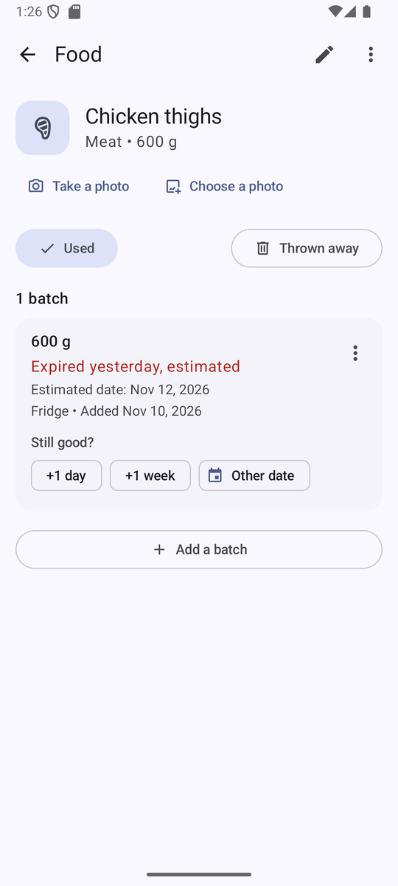

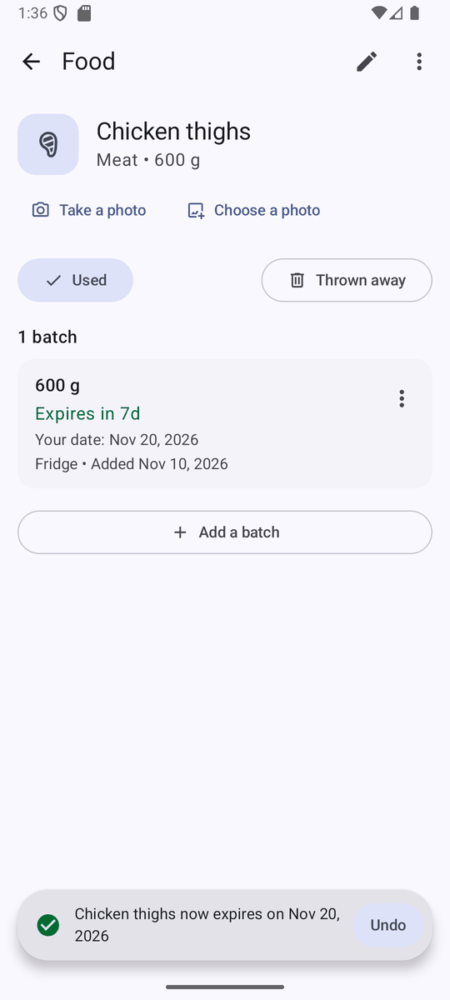
Verification
spec/tools/vectors.py: 167 cases, 0 failures.- Android: 161 unit tests with the vectors, lint with no issues, and the 6 device tests of the changes to the inventory, with the new test of "+1 day", "Your date", and "Undo".
- iOS: the new source is in
CVKEFridgeCore. Not built: iOS builds only in CI after a push.
Known limits
- Not checked on a phone yet.
- The iOS app has no screen of a food yet, so it has no buttons.
Settings tab, camera photos, and My Fridge from the bar · Android, 13 November 2026
Four changes that the owner asked for after use on the phone
(ADR 0008). Settings is the fifth place of
the navigation bar, with a switch for the wallpaper colours. A tap on My Fridge in the bar shows the Fridge with
no filter. A product photo comes from the camera app or from the photos of the phone, on the screen of a food
and in the add form. Not committed yet. The work is on top of dce5b94 and of the
uncommitted Add button and floating messages.

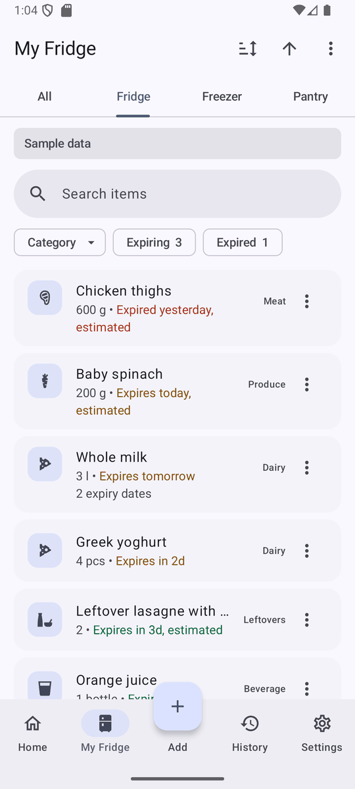

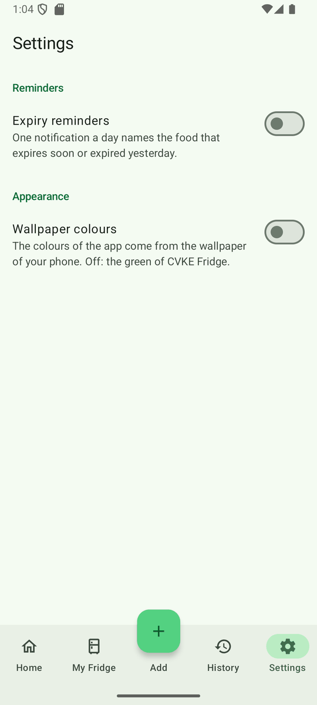

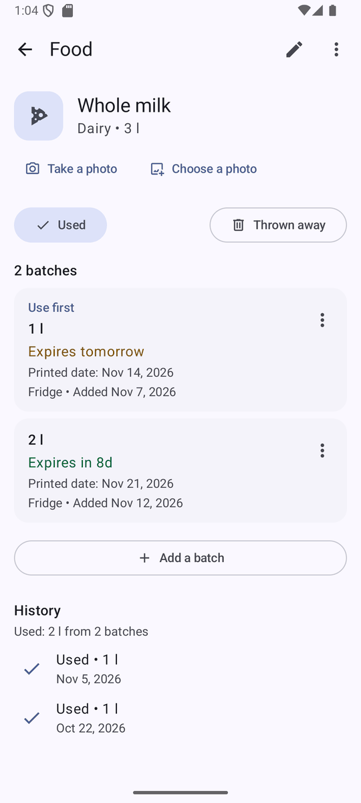

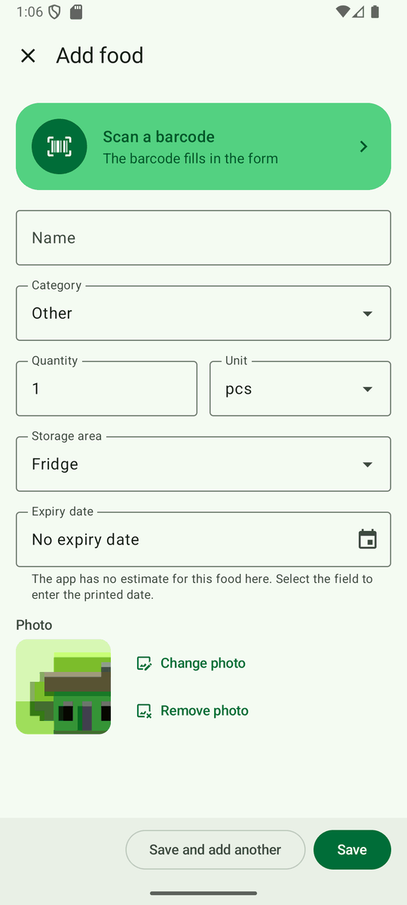
Verification
- On the emulator: the camera explanation, the question of Android, the camera app of the emulator, the photo in the add form, and the saved food with the photo. The picture of the camera app was gone after the app made the photo.
- Unit tests and lint: passed.
- Device tests: 23 of 23 passed on the emulator (API 36), with the new tests for the bar, the setting, the camera, and the add form. One new test first failed on its own wait for a file and was corrected. Not yet run at the small screen of CI.
Known limits
- Not checked on a phone yet. The camera app of each phone maker is different.
- The photo is still not in the change log or in
spec/. - The iOS app has none of this yet.
Wallpaper colours on Android · 12 November 2026
On Android 12 and later, the colour scheme comes from the wallpaper of the phone. Fresh,
expiring, and expired keep their colours, and the brand gradient does not change. Android 10 and 11 keep the
scheme from the green of FridgeFriend. The iOS app keeps the green.
ADR 0007. Android commit
dce5b94.

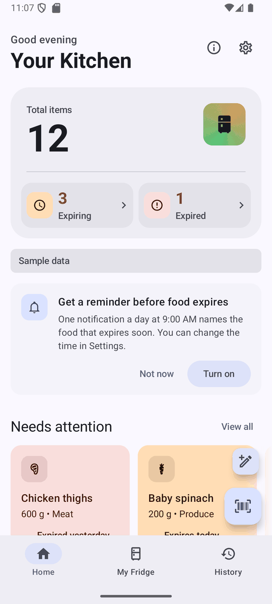
dce5b94 · sample data
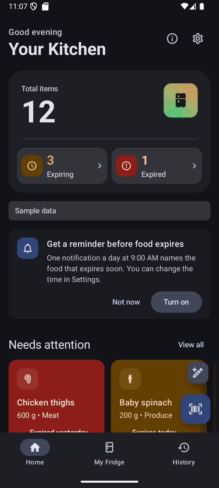
dce5b94 · sample dataThe screenshots of milestones 2 to 5 below are from before this change. They show the green scheme.
Milestone 5: History · Android, 12 November 2026
History is the third tab. It shows what was used and what was thrown away, with a summary
for this month, the last month, or all time. "Add again" adds a food from a history entry, from the screen of a
food, or from the recent foods in the add form. A product can have a photo from the photo picker. Android commits
a516a1f to 8529628.

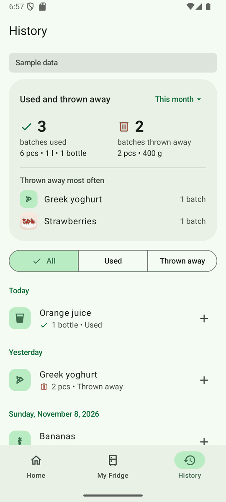
2b68d37 · sample data
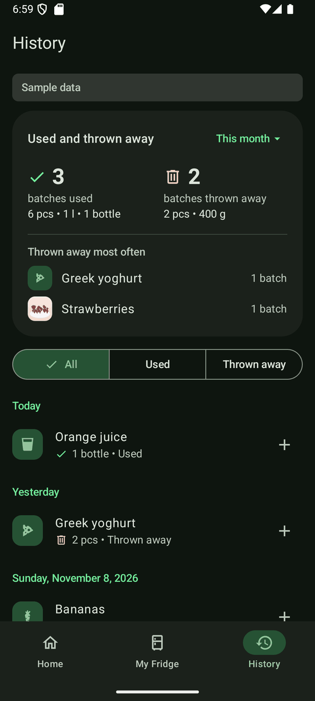
2b68d37 · sample data
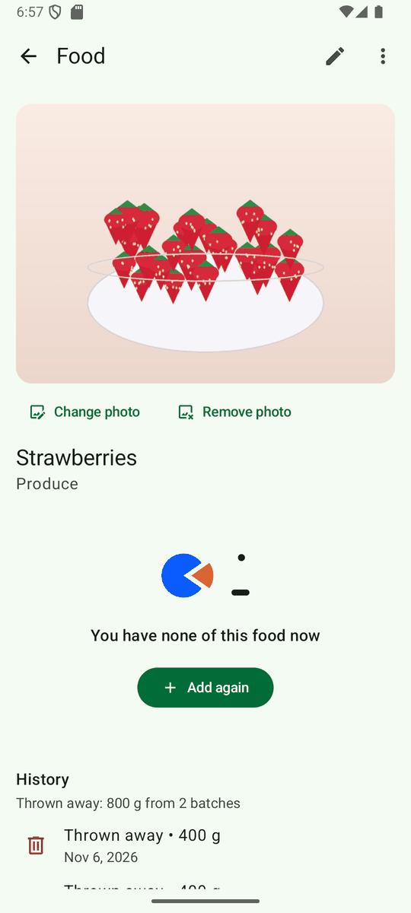

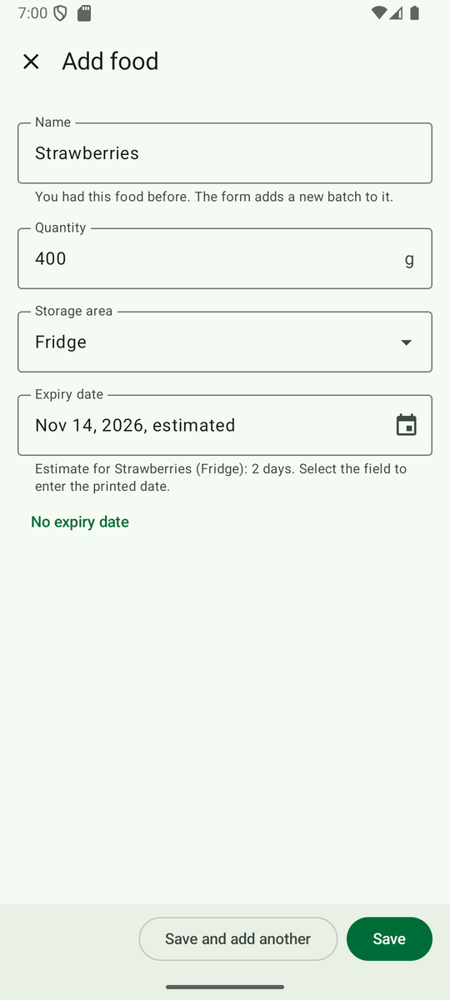
Verification
- Unit tests:
HistoryContentTest,AddAgainTest,PhotoFilesTest,PhotoStoreTest. - Device test
HistoryDeviceTest: used and thrown away appear in History, the filter, add again with the new batch in the change log, and a photo through a restart, remove, and undo. - Checked with large text (1.5) and in landscape. A change log of 3000 ended batches opened at once on the emulator.
Known limits
- The history rules and the photo are not in
spec/. - The
Productof the core has no photo, and a photo is not in the change log. - The speed check used a debug build on an emulator. It does not show the frame times of a phone.
Milestone 4: Reminders · Android, 12 November 2026
Not more than one notification a day, at a time that the person sets. It names the food
that expires within the lead time or expired yesterday. Home offers reminders one time, and a dialog explains
them before Android asks. Settings has the switch, the time, the lead time, and the next reminder. Android commits
c205be0 to e9ce076.

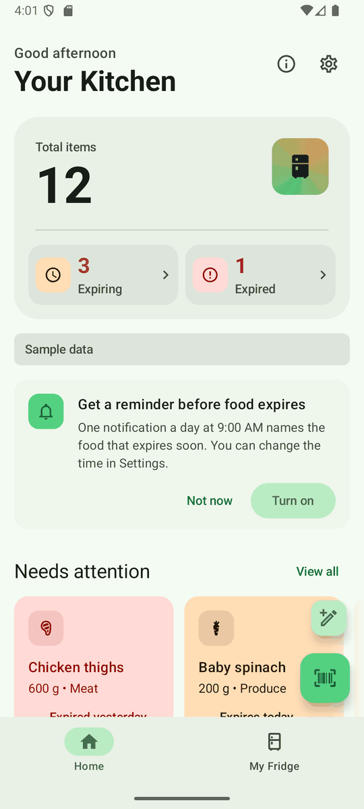
ca3d7da · sample data
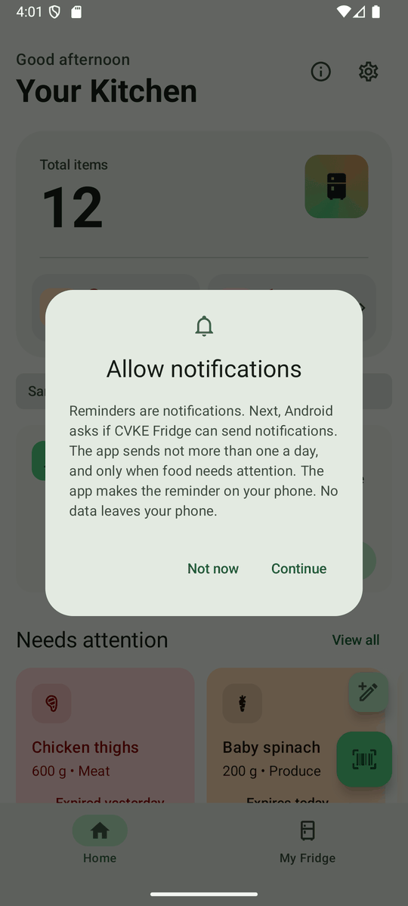

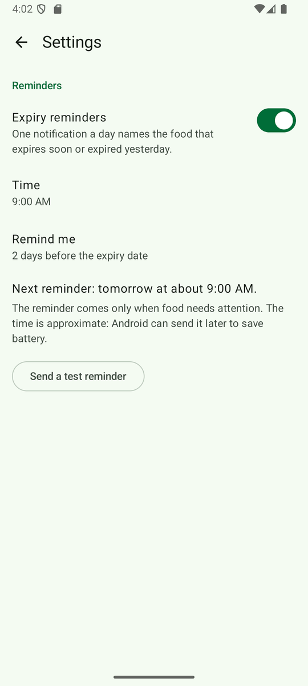

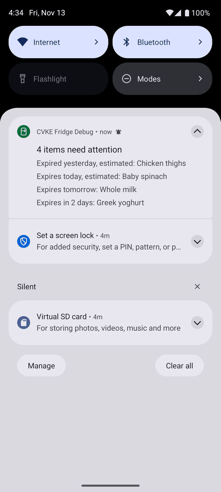
7eccc0c · sample dataVerification
- Unit tests:
ReminderRulesTest,ReminderTextTest,ReminderScheduleTest(midnight, daylight saving time, and time zone changes),ReminderSettingsTest,NotificationAccessTest. - Device test
ReminderDeviceTest: the offer, the explanation, the Android question, the settings, the alarm work with the real change log, and a tap on the notification. - The CI run of
e9ce076had a failed device test.8d7558athen changed a device test for the small screen of CI, and the next runs passed.
Known limits
- The time is approximate: an inexact alarm can come up to one hour late on Android 12 and later, and later in Doze.
- The notification has no actions. Used and thrown away need a quantity and an undo.
- The reminder rules are not in
spec/.
Milestone 3: Add with a barcode · Android, 12 November 2026
A camera scanner with the ML Kit model in the app, the product lookup with Open Food Facts
and a cache on the phone, and the add form with the values of the lookup. The screen explains the camera before
Android asks, and "Type the barcode" and "Add by hand" are always there. Only the barcode number leaves the
phone. Android commits ca2a97b to 537e023.

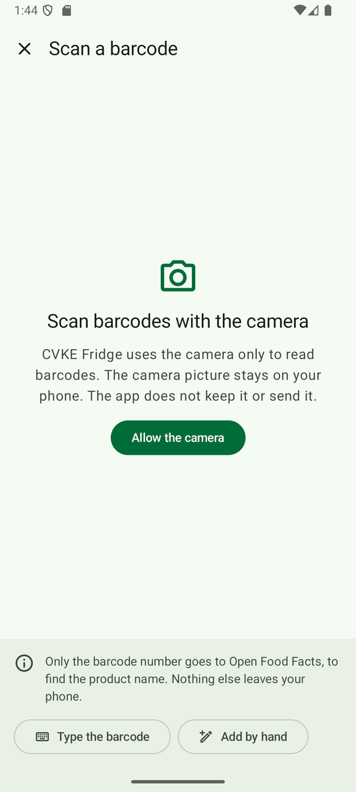
1a9e7c8
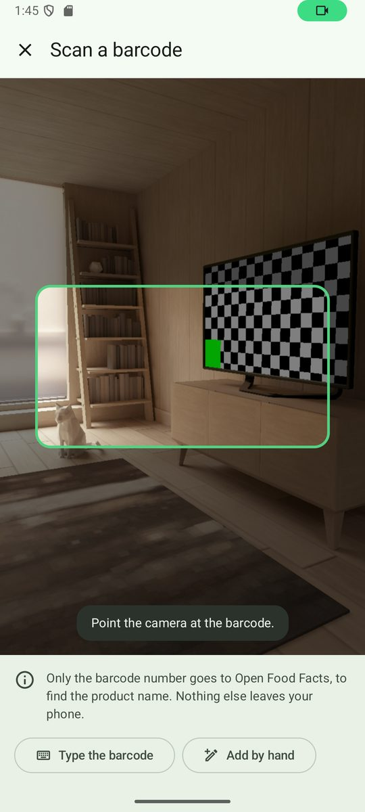

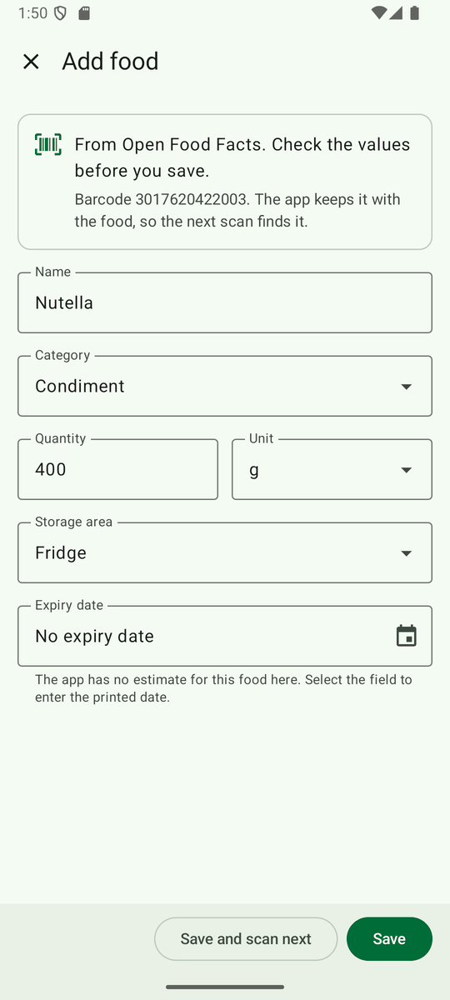

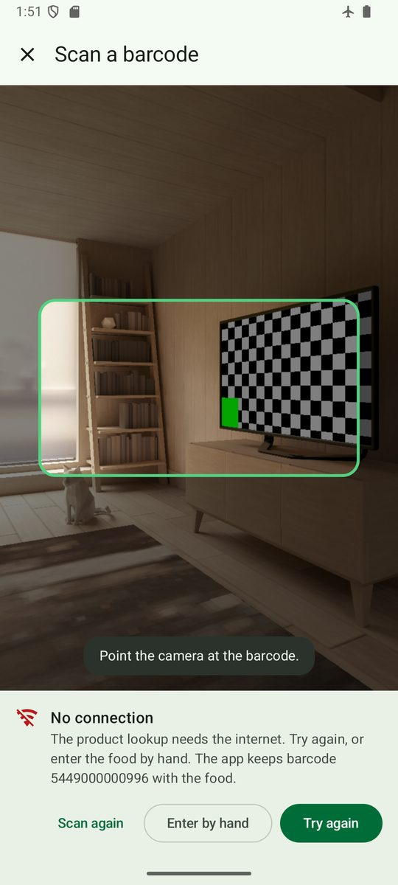
Verification
- Unit tests:
BarcodesTest,OpenFoodFactsTest(with recorded answers of the API),ProductMappingTest,ProductLookupTest,ScanDebouncerTest. - Device test
BarcodeDeviceTest: a typed barcode to a saved food, "not found", and "no connection", with a fake server in place of the internet. - Device test
BarcodeReaderDeviceTest: the ML Kit model of the app reads drawn barcodes. - Checked in dark appearance, with large text (1.5), and in landscape.
Known limits
- The barcode and lookup rules are not in
spec/. - The ML Kit model adds about 1 MB and a native library of 3 to 6 MB for each ABI.
- This report has no screenshot of a scan of a real package with a phone camera.
Milestone 2: Inventory on one phone · Android, 12 November 2026
The change log on the phone, Home and My Fridge with the contents of FridgeFriend
(ADR 0006), the add form,
the screen of a food with its edit forms, used and thrown away with undo, and the storage areas. Android commits
a9fc729 to 3ca5a46.

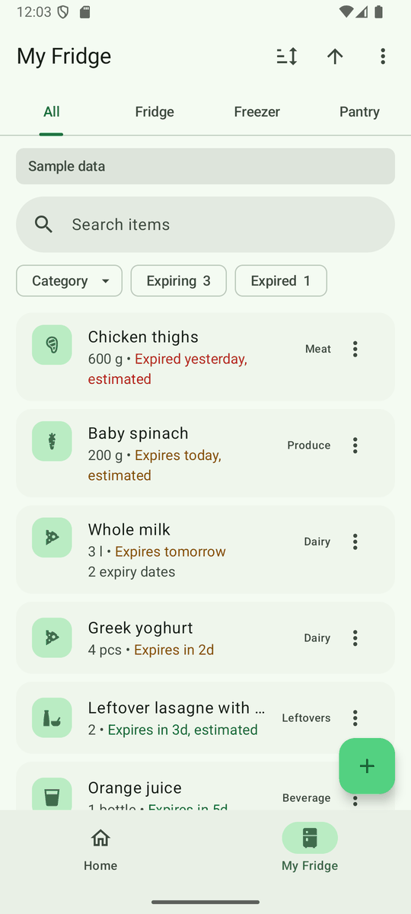
83cf933 · sample data
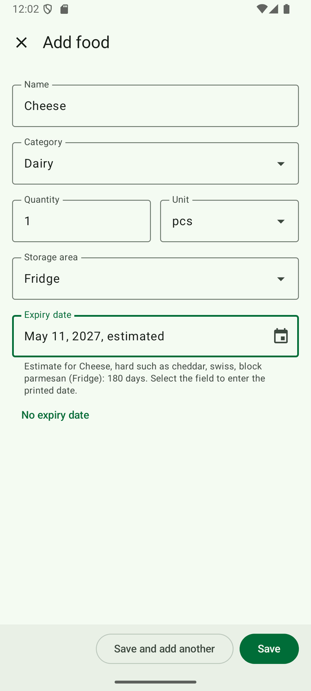

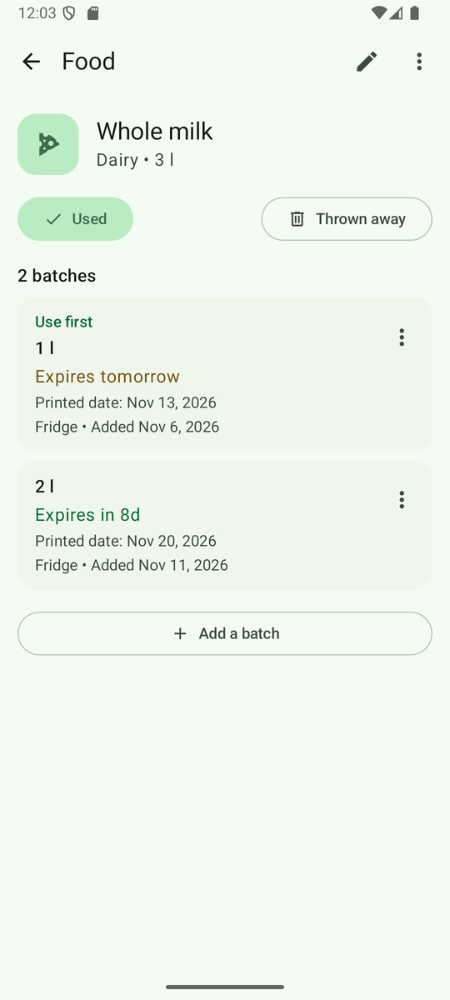

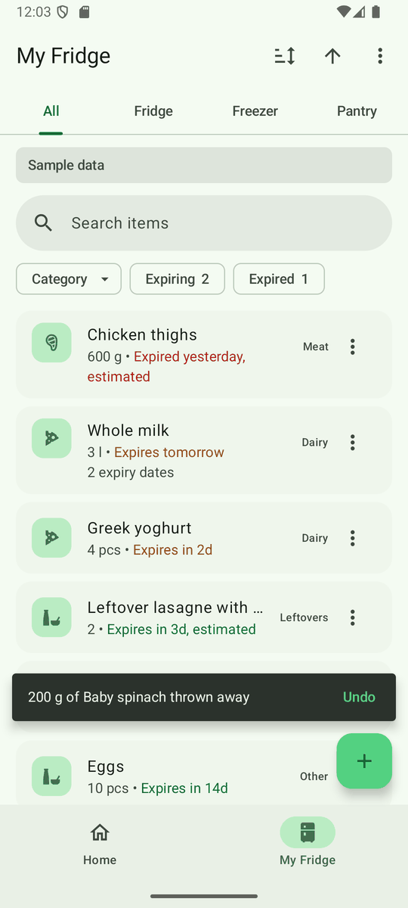
Verification
- Unit tests:
InventoryContentTest,AddFoodFormTest,EditFormsTest,InventoryActionsTest,NewChangesTest. - Device tests
InventoryScreensDeviceTestandInventoryChangesDeviceTest: the screens with and with no food, add by hand, a swipe to used with undo, thrown away, edit a batch, and a new storage area, checked against the replay of the change log. - Checked with large text (1.5) and in landscape.
Known limits
- The sample data is in the debug build only, and the screen labels it.
- A delete is only in a menu, because it is for a mistake. Used and thrown away are the two ends of a batch.
Milestones 0 and 1: Scaffold and core rules · Both apps, 10 November 2026
Scaffold
Three repositories, a start screen in each app, and green CI in each repository.
Core rules
Products and batches, calendar dates, days left, freshness, the expiry estimate from the table of foods, the
use-first order, and the change log, in :core and CVKEFridgeCore. Both modules pass
the 165 vector cases at commit e1e8363 of spec/. Issue 1 is closed in the three
repositories.
Work not done
Required
- Move the rules of milestones 3 to 5 into
spec/and both core modules (plan, section 6.1). - Build milestones 2 to 5 in the iOS app.
- Make the parent issues and the sub-issues of milestones 2 to 5.
- Milestone 6: screen readers, rotation, store listings, privacy details, and signing.
Open decisions and work in progress
- Open decisions 1 to 3 of the plan: the store name, the product identity, and the glossary words.
- Android, not committed on 13 November 2026: the Add button in the centre of the navigation bar, the scan card at the top of the add form, floating messages, and the work of ADR 0008.
Change history
The newest entry is first. Keep the earlier entries.
- Not committed: a later expiry date for food that is still good, with the new source
chosenin the shared rules and in both core modules (ADR 0009). - Android, not committed: Settings in the navigation bar with a switch for the wallpaper colours, My Fridge from the bar shows the Fridge with no filter, and photos from the camera and in the add form (ADR 0008).
- Start of this report. The plan records milestones 2 to 5 as done on Android and not started on iOS, and lists the rules that are only in the Android app.
- Android: the wallpaper colours (ADR 0007), milestone 5, milestone 4, milestone 3, and milestone 2. The competitor research on food inventory apps. Home first and all food on My Fridge (ADR 0006).
- Milestone 1 in both apps: 165 vector cases at one commit of
spec/. Milestone 0: three repositories, start screens, and CI.